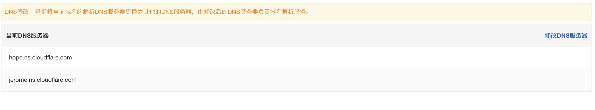
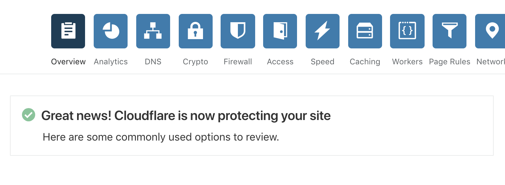
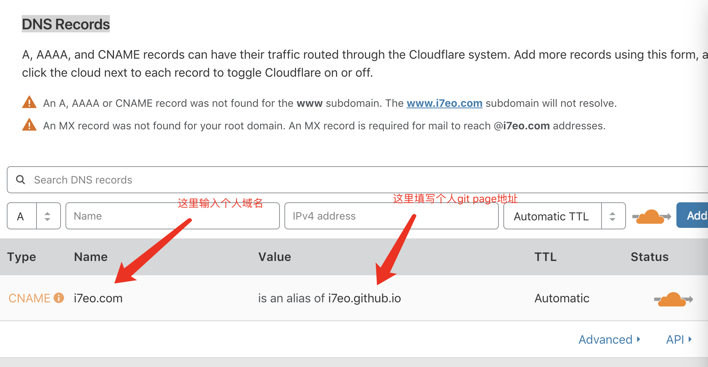
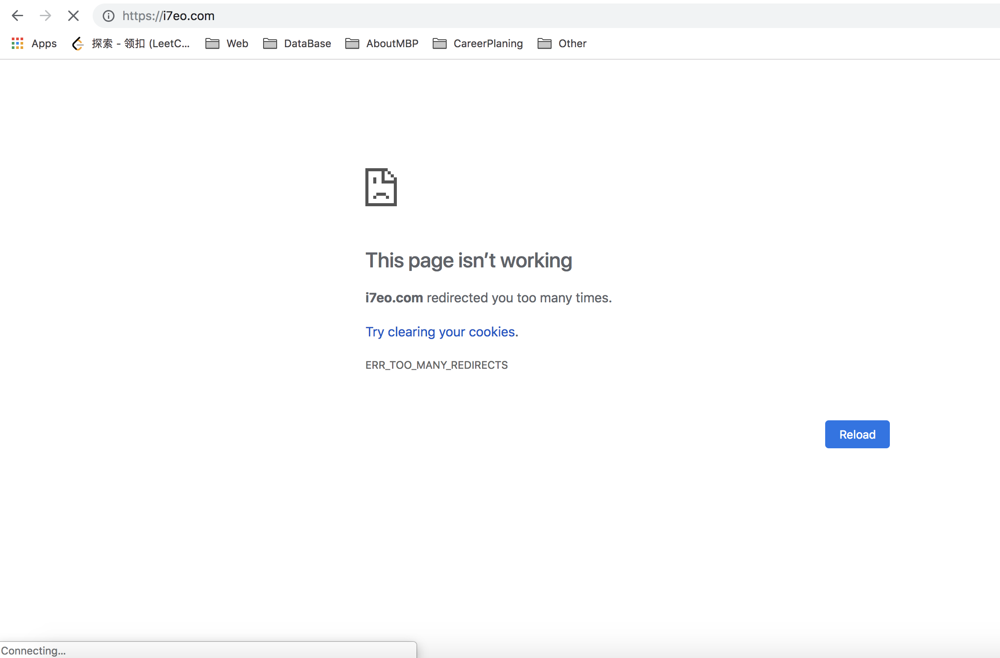
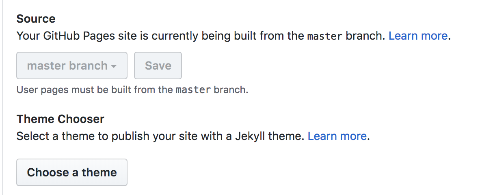

<!DOCTYPE html>
<html>
<head><meta name="generator" content="Hexo 3.8.0">
  <meta charset="utf-8">
  <meta http-equiv="X-UA-Compatible" content="IE=edge">
  
  <title>为git page开通https踩坑实录 | Solitude is freedom</title>
  <!-- <meta name="description" content="A man who dreams of being a full stack engineer" />
  <meta name="keywords" content="Javascript,Nodejs,Vue,Nuxt,Other" /> -->
  <meta name="HandheldFriendly" content="True">
  <meta name="apple-mobile-web-app-capable" content="yes">
  <!-- <link rel="shortcut icon" href="/"> -->
  <link rel="icon" href="/images/favicon.ico">
  <link rel="alternate" href="/atom.xml" title="Solitude is freedom">
  <meta name="viewport" content="width=device-width, initial-scale=1, maximum-scale=1">
  <meta name="description" content="&amp;nbsp;&amp;nbsp;&amp;nbsp;&amp;nbsp;&amp;nbsp;&amp;nbsp;&amp;nbsp;&amp;nbsp;利用hexo与gitpage开通博客后，无论是pc&amp;amp;mobile登陆时总会发现地址栏前有个感叹号。强迫症表示真的看不下去，所以就去了解了下https。 HTTPS的优点 了解到https是以安全为目标的HTTP通道，简单讲是HTTP的安全版。即HTTP下加入SSL层，HTTPS的安全基础是SSL">
<meta name="keywords" content="cloudflare,https">
<meta property="og:type" content="article">
<meta property="og:title" content="为git page开通https踩坑实录">
<meta property="og:url" content="https://i7eo.com/2017/10/01/为gitPages开通https踩坑实录.html">
<meta property="og:site_name" content="Solitude is freedom">
<meta property="og:description" content="&amp;nbsp;&amp;nbsp;&amp;nbsp;&amp;nbsp;&amp;nbsp;&amp;nbsp;&amp;nbsp;&amp;nbsp;利用hexo与gitpage开通博客后，无论是pc&amp;amp;mobile登陆时总会发现地址栏前有个感叹号。强迫症表示真的看不下去，所以就去了解了下https。 HTTPS的优点 了解到https是以安全为目标的HTTP通道，简单讲是HTTP的安全版。即HTTP下加入SSL层，HTTPS的安全基础是SSL">
<meta property="og:locale" content="default">
<meta property="og:image" content="https://i7eo.com/2017/10/01/为gitPages开通https踩坑实录/i7eo_4436910aa5b1e131037aa2f6007f7d23.png">
<meta property="og:image" content="https://i7eo.com/2017/10/01/为gitPages开通https踩坑实录/i7eo_be5528c7b4f28ce887136746b5de2d03.png">
<meta property="og:image" content="https://i7eo.com/2017/10/01/为gitPages开通https踩坑实录/i7eo_a726bae253f790060294d739a7ea706f.png">
<meta property="og:image" content="https://i7eo.com/2017/10/01/为gitPages开通https踩坑实录/i7eo_65772c9053e1e9b5a941fa515bc3c3f5.png">
<meta property="og:image" content="https://i7eo.com/2017/10/01/为gitPages开通https踩坑实录/i7eo_ee6b38aa59be590bd6736c90911683a4.png">
<meta property="og:updated_time" content="2018-12-28T18:56:19.680Z">
<meta name="twitter:card" content="summary">
<meta name="twitter:title" content="为git page开通https踩坑实录">
<meta name="twitter:description" content="&amp;nbsp;&amp;nbsp;&amp;nbsp;&amp;nbsp;&amp;nbsp;&amp;nbsp;&amp;nbsp;&amp;nbsp;利用hexo与gitpage开通博客后，无论是pc&amp;amp;mobile登陆时总会发现地址栏前有个感叹号。强迫症表示真的看不下去，所以就去了解了下https。 HTTPS的优点 了解到https是以安全为目标的HTTP通道，简单讲是HTTP的安全版。即HTTP下加入SSL层，HTTPS的安全基础是SSL">
<meta name="twitter:image" content="https://i7eo.com/2017/10/01/为gitPages开通https踩坑实录/i7eo_4436910aa5b1e131037aa2f6007f7d23.png">

  <!-- <link href="https://fonts.googleapis.com/css?family=Inconsolata|Titillium+Web" rel="stylesheet">
  <link href="https://fonts.googleapis.com/css?family=Roboto+Mono" rel="stylesheet"> -->
  <link href="//cdn.bootcss.com/node-waves/0.7.5/waves.min.css" rel="stylesheet">
  <link rel="stylesheet" href="/style.css">
  <script>
    function setLoadingBarProgress(num) {
      document.getElementById('loading-bar').style.width=num+"%";
    }
  </script>
</head>
</html>
<body>
  <div id="loading-bar-wrapper">
  <div id="loading-bar"></div>
</div>


  <script>setLoadingBarProgress(20)</script> 
  <header class="l_header">
	<div class="wrapper">
		<div class="nav-main container container--flex">
			<a class="logo flat-box" href="/">
				Solitude is freedom
			</a>
			<div class="menu">
				<ul class="h-list">
					
						<li>
							<a class="flat-box nav-home" href="/">
								Home
							</a>
						</li>
					
						<li>
							<a class="flat-box nav-archives" href="/archives">
								Archives
							</a>
						</li>
					
						<li>
							<a class="flat-box nav-about" href="/about">
								About
							</a>
						</li>
					
				</ul>
				<div class="underline"></div>
			</div>
			
				<div class="m_search">
					<form name="searchform" class="form u-search-form">
						<input type="text" class="input u-search-input" placeholder="Search">
						<span class="icon icon-search"></span>
					</form>
				</div>
			
			<ul class="switcher h-list">
				
					<li class="s-search"><a href="javascript:void(0)"><span class="icon icon-search flat-box"></span></a></li>
				
				<li class="s-menu"><a href="javascript:void(0)"><span class="icon icon-menu flat-box"></span></a></li>
			</ul>
		</div>

		<div class="nav-sub container container--flex">
			<a class="logo mlogo" href="javascript:void(0)">
				Word of Forks
			</a>

			<ul class="switcher h-list">
				<li class="s-comment"><a href="javascript:void(0)"><span class="icon icon-chat_bubble_outline flat-box"></span></a></li>
				<li class="s-top"><a href="javascript:void(0)"><span class="icon icon-arrow_upward flat-box"></span></a></li>
				<!-- <li class='s-toc'><a href='javascript:void(0)'><span class="icon icon-format_list_numbered flat-box"></span></a></li> -->
			</ul>
		</div>
	</div>
</header>
<aside class="menu-phone">
	<nav>
		
			<a href="/" class="nav-home nav">
				Home
			</a>
		
			<a href="/archives" class="nav-archives nav">
				Archives
			</a>
		
			<a href="/about" class="nav-about nav">
				About
			</a>
		
	</nav>
</aside>

    <script>setLoadingBarProgress(40);</script>
  <div class="l_body">
    <div class='container clearfix'>
      <div class='l_main'>
        <article id="post-为gitPages开通https踩坑实录" class="post white-box article-type-post" itemscope="" itemprop="blogPost">
	<section class="meta">
	<h2 class="title">
  	<a href="/2017/10/01/为gitPages开通https踩坑实录.html">
    	为git page开通https踩坑实录
    </a>
  </h2>
	<time>
	  Oct 1, 2017
	</time>
	
    
    <span class="post-count">
      |&nbsp;字数 747
    </span>
    <div class="cats">
        <a href="/categories/运维/">运维</a>
    </div>


	</section>
	
		<section class="toc-wrapper"><ol class="toc"><li class="toc-item toc-level-3"><a class="toc-link" href="#HTTPS的优点"><span class="toc-number">1.</span> <span class="toc-text">HTTPS的优点</span></a></li><li class="toc-item toc-level-3"><a class="toc-link" href="#gitPages注意事项"><span class="toc-number">2.</span> <span class="toc-text">gitPages注意事项</span></a></li><li class="toc-item toc-level-3"><a class="toc-link" href="#安利cloudflare的原因"><span class="toc-number">3.</span> <span class="toc-text">安利cloudflare的原因</span></a></li><li class="toc-item toc-level-3"><a class="toc-link" href="#cloudflare配置的具体步骤"><span class="toc-number">4.</span> <span class="toc-text">cloudflare配置的具体步骤</span></a><ol class="toc-child"><li class="toc-item toc-level-4"><a class="toc-link" href="#第一步：设置dns"><span class="toc-number">4.1.</span> <span class="toc-text">第一步：设置dns</span></a></li><li class="toc-item toc-level-4"><a class="toc-link" href="#第二步：设置dns信息"><span class="toc-number">4.2.</span> <span class="toc-text">第二步：设置dns信息</span></a></li><li class="toc-item toc-level-4"><a class="toc-link" href="#第三步：设置ssl-amp-强制跳转"><span class="toc-number">4.3.</span> <span class="toc-text">第三步：设置ssl&amp;强制跳转</span></a></li><li class="toc-item toc-level-4"><a class="toc-link" href="#第四步：坐等-amp-排错"><span class="toc-number">4.4.</span> <span class="toc-text">第四步：坐等&amp;排错</span></a></li></ol></li></ol></section>
		<section class="toc-wrapper-vdom"><ol class="toc"><li class="toc-item toc-level-3"><a class="toc-link" href="#HTTPS的优点"><span class="toc-number">1.</span> <span class="toc-text">HTTPS的优点</span></a></li><li class="toc-item toc-level-3"><a class="toc-link" href="#gitPages注意事项"><span class="toc-number">2.</span> <span class="toc-text">gitPages注意事项</span></a></li><li class="toc-item toc-level-3"><a class="toc-link" href="#安利cloudflare的原因"><span class="toc-number">3.</span> <span class="toc-text">安利cloudflare的原因</span></a></li><li class="toc-item toc-level-3"><a class="toc-link" href="#cloudflare配置的具体步骤"><span class="toc-number">4.</span> <span class="toc-text">cloudflare配置的具体步骤</span></a><ol class="toc-child"><li class="toc-item toc-level-4"><a class="toc-link" href="#第一步：设置dns"><span class="toc-number">4.1.</span> <span class="toc-text">第一步：设置dns</span></a></li><li class="toc-item toc-level-4"><a class="toc-link" href="#第二步：设置dns信息"><span class="toc-number">4.2.</span> <span class="toc-text">第二步：设置dns信息</span></a></li><li class="toc-item toc-level-4"><a class="toc-link" href="#第三步：设置ssl-amp-强制跳转"><span class="toc-number">4.3.</span> <span class="toc-text">第三步：设置ssl&amp;强制跳转</span></a></li><li class="toc-item toc-level-4"><a class="toc-link" href="#第四步：坐等-amp-排错"><span class="toc-number">4.4.</span> <span class="toc-text">第四步：坐等&amp;排错</span></a></li></ol></li></ol></section>
	
	<section class="article typo">
  	<div class="article-entry" itemprop="articleBody">
    	<p>&nbsp;&nbsp;&nbsp;&nbsp;&nbsp;&nbsp;&nbsp;&nbsp;利用hexo与gitpage开通博客后，无论是pc&amp;mobile登陆时总会发现地址栏前有个感叹号。强迫症表示真的看不下去，所以就去了解了下https。</p>
<h3 id="HTTPS的优点"><a href="#HTTPS的优点" class="headerlink" title="HTTPS的优点"></a>HTTPS的优点</h3><ul>
<li>了解到https是以安全为目标的HTTP通道，简单讲是HTTP的安全版。即HTTP下加入SSL层，HTTPS的安全基础是SSL，因此加密的详细内容就需要SSL。</li>
<li>最重要的一点，https可以避免dns挟持，就是可以避免在浏览网页时出现一些小广告弹窗！</li>
</ul>
<a id="more"></a>
<p>&nbsp;&nbsp;&nbsp;&nbsp;&nbsp;&nbsp;&nbsp;&nbsp;结合自己的代码发现引用的图片全是http协议下的，而且在input（即使type≠keyword）输入内容时感叹号变成了红字叉。我所用的是阿里的域名所以去网站查询https的信息，发现有免费的赛门铁克（Symantec）证书试用。果断申请后，发现：</p>
<h3 id="gitPages注意事项"><a href="#gitPages注意事项" class="headerlink" title="gitPages注意事项"></a>gitPages注意事项</h3><ul>
<li>git page自带https，在对应rep的设置中，点击 Enforce HTTPS 即可。</li>
<li>git page绑定自定义域名后无法添加ssl证书。<br>这个时候有点懵了，不过检索多次相关关键字后，发现了cloudflare这个好东西。大概了解了下后就确定用它了，好处如下：</li>
</ul>
<h3 id="安利cloudflare的原因"><a href="#安利cloudflare的原因" class="headerlink" title="安利cloudflare的原因"></a>安利cloudflare的原因</h3><ul>
<li>有免费套</li>
<li>cloudflare的dns服务器风评还是不错的<br>-cloudflare提供 Universal SSL 服务，简单来说就是让任意http站点支持https。<br>  （具体原理指的是，用cloudflare的dns服务器，当你访问网页时，网页 -&gt; cloudflare 这个过程是加密的，而 cloudflare -&gt; git page这个过程是非加密（http））</li>
</ul>
<p>具体可参考官方文档：<a href="https://support.cloudflare.com/hc/en-us/articles/200170416" target="_blank" rel="noopener"> how Cloudflare’s servers connect to your origin for HTTPS requests</a></p>
<h3 id="cloudflare配置的具体步骤"><a href="#cloudflare配置的具体步骤" class="headerlink" title="cloudflare配置的具体步骤"></a>cloudflare配置的具体步骤</h3><h4 id="第一步：设置dns"><a href="#第一步：设置dns" class="headerlink" title="第一步：设置dns"></a>第一步：设置dns</h4><p>把自己对应的dns服务器改为cloudflare的，下面以阿里来举例。阿里云 -&gt; 域名 -&gt; 管理 -&gt; 修改dns，出现一下界面：</p>
<p></p>
<p>这是我已经修改后的，单击右边的修改dns服务器即可，把cloudflare给出的俩个dns地址换上来就好。cloudflare给出的dns地址位于：cloudflare -&gt; dns -&gt; Cloudflare Nameservers。</p>
<p>如何判断更换dns成功？<br>回到cloudflare后，单击overview，如果成功会出现：</p>
<p></p>
<h4 id="第二步：设置dns信息"><a href="#第二步：设置dns信息" class="headerlink" title="第二步：设置dns信息"></a>第二步：设置dns信息</h4><p>cloudflare -&gt; dns -&gt; DNS Records 如果这里没设置时有记录先删除，新增一条记录:</p>
<p></p>
<h4 id="第三步：设置ssl-amp-强制跳转"><a href="#第三步：设置ssl-amp-强制跳转" class="headerlink" title="第三步：设置ssl&amp;强制跳转"></a>第三步：设置ssl&amp;强制跳转</h4><p>cloudflare -&gt; crypto -&gt; SSL 勾选flexible</p>
<p>cloudflare -&gt; crypto -&gt; Always Use HTTPS 勾选on</p>
<h4 id="第四步：坐等-amp-排错"><a href="#第四步：坐等-amp-排错" class="headerlink" title="第四步：坐等&amp;排错"></a>第四步：坐等&amp;排错</h4><p>大概10mins - 30mins左右就会生效，可以在等待的时候使用ping命令来ping个人的域名查看ip。</p>
<p>如果你的博客出现以下情况：</p>
<p></p>
<p>检查gitpage的设置，取消掉勾选的Enforce HTTPS选项，这个设置是有缓存的</p>
<p></p>
<p>可以切换source或者theme chooser这样可以清理掉缓存的Enforce HTTPS选项信息。</p>
<p>参考文章：</p>
<p><a href="https://steffan.cn/2017/03/22/use-cloudflare-to-implement-HTTPS-for-GithubPages-with-custom-domain-names/" target="_blank" rel="noopener">使用Cloudflare为自定义域名的GithubPages实现HTTPS化</a></p>
<p><a href="https://www.heartnn.com/2018/11/17/resolve-err-too-many-redirects-on-cloudflare/" target="_blank" rel="noopener">解决Cloudflare产生的“ERR_TOO_MANY_REDIRECTS”错误</a></p>

  	</div>
	  
	  <div class="article-tags tags">
      
        <a href="/tags/cloudflare/">cloudflare</a>
      
        <a href="/tags/https/">https</a>
      
	  </div>
    

	
		<div class="art-item-footer">
				
					<span class="art-item-left">上一篇：<a href="/2017/11/03/Mac下利用Alfred与七牛搭建markdown图床.html" rel="prev" title="Mac下利用Alfred与七牛搭建markdown图床">
						Mac下利用Alfred与七牛搭建markdown图床
					</a></span>
				
				
		</div>
	
	</section>
	
</article>
<script>
	window.subData = {
		title: '为git page开通https踩坑实录',
		tools: true
	}
</script>

      </div>
      <aside class='l_side'>
        
    <section class="m_widget about">
<a href="/about">
  
</a>
<div class="header">George Tan</div>
<div class="content">
<div class="desc">A man who dreams of being a full stack engineer</div>
</div>
</section>


    <!-- <section class='m_widget links'>
<div class='header'>Links</div>
<div class='content'>
    <ul class="entry">
    
        <li><a class="flat-box" target="_blank" href="https://ccoooss.com">
            <div class='name'>ClassicOldSong</div>
        </a></li>
    
        <li><a class="flat-box" target="_blank" href="https://frantic1048.logdown.com/">
            <div class='name'>Frantic1048</div>
        </a></li>
    
        <li><a class="flat-box" target="_blank" href="https://hclmaster.github.io/">
            <div class='name'>Hclmaster</div>
        </a></li>
    
        <li><a class="flat-box" target="_blank" href="https://whst.github.io/">
            <div class='name'>WANG Hsü-Tung</div>
        </a></li>
    
    </ul>
</div>
</section> -->


    <section class="m_widget categories">
<div class="header">Categories</div>
<div class="content">
    
    <ul class="entry">
    
        <li><a class="flat-box" href="/categories/Javascript/"><div class="name">Javascript</div><div class="badget">3</div></a></li>
    
        <li><a class="flat-box" href="/categories/Vue-SSR/"><div class="name">Vue SSR</div><div class="badget">1</div></a></li>
    
        <li><a class="flat-box" href="/categories/自动化/"><div class="name">自动化</div><div class="badget">1</div></a></li>
    
        <li><a class="flat-box" href="/categories/运维/"><div class="name">运维</div><div class="badget">1</div></a></li>
    
    </ul>
    
</div>
</section>

    
<div class="m_widget tagcloud">
    <div class="header">Tags</div>
    <div class="content">
        <a href="/tags/Alfred3-workflow/" style="font-size: 14px; color: #808080">Alfred3 workflow</a> <a href="/tags/EventLoop/" style="font-size: 14px; color: #808080">EventLoop</a> <a href="/tags/Nuxt-js/" style="font-size: 14px; color: #808080">Nuxt.js</a> <a href="/tags/SSR/" style="font-size: 14px; color: #808080">SSR</a> <a href="/tags/cloudflare/" style="font-size: 14px; color: #808080">cloudflare</a> <a href="/tags/https/" style="font-size: 14px; color: #808080">https</a> <a href="/tags/prototype-proto/" style="font-size: 14px; color: #808080">prototype/_proto_</a> <a href="/tags/qshell/" style="font-size: 14px; color: #808080">qshell</a> <a href="/tags/图床/" style="font-size: 14px; color: #808080">图床</a> <a href="/tags/继承/" style="font-size: 14px; color: #808080">继承</a> <a href="/tags/虚拟Dom/" style="font-size: 14px; color: #808080">虚拟Dom</a> <a href="/tags/面向对象/" style="font-size: 14px; color: #808080">面向对象</a>
    </div>
</div>


      </aside>
      <script>setLoadingBarProgress(60);</script>
    </div>
  </div>
  <footer id="footer" class="clearfix">

	<div class="social-wrapper">
  	
      
        <a href="https://github.com/i7eo" class="social github" target="_blank" rel="external">
          <span class="icon icon-github"></span>
        </a>
      
        <a href="/atom.xml" class="social rss" target="_blank" rel="external">
          <span class="icon icon-rss"></span>
        </a>
      
    
  </div>

  <div>Theme <a href="https://github.com/stkevintan/hexo-theme-material-flow" class="codename">MaterialFlow</a> Powered by <a href="https://hexo.io/" target="_blank" class="codename">Hexo</a>.</div>

</footer>

  <script>setLoadingBarProgress(80);</script>
  

<!-- <script src="//apps.bdimg.com/libs/jquery/2.1.4/jquery.min.js"></script> -->
<script src="//cdn.bootcss.com/jquery/2.1.4/jquery.min.js"></script>
<script src="//cdn.bootcss.com/node-waves/0.7.5/waves.min.js"></script>
<script src="//cdn.bootcss.com/scrollReveal.js/3.3.2/scrollreveal.min.js"></script>
<script src="/js/jquery.fitvids.js"></script>
<script>
	var GOOGLE_CUSTOM_SEARCH_API_KEY = "";
	var GOOGLE_CUSTOM_SEARCH_ENGINE_ID = "";
	var ALGOLIA_API_KEY = "";
	var ALGOLIA_APP_ID = "";
	var ALGOLIA_INDEX_NAME = "";
  var AZURE_SERVICE_NAME = "";
  var AZURE_INDEX_NAME = "";
  var AZURE_QUERY_KEY = "";
  var BAIDU_API_ID = "";
  var SEARCH_SERVICE = "hexo";
  var ROOT = "/"||"/";
  if(!ROOT.endsWith('/'))ROOT += '/';
</script>
<script src="/js/search.js"></script>
<script src="/js/app.js"></script>

  <script>setLoadingBarProgress(100);</script>
</body>
</html>
